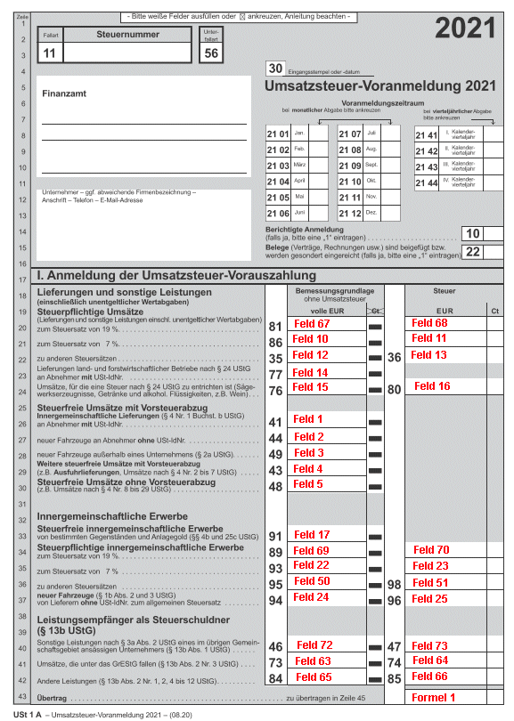
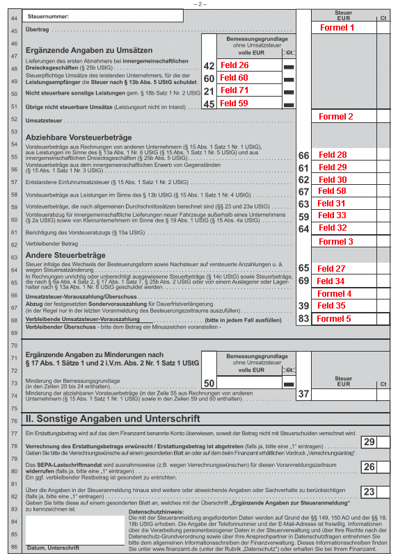
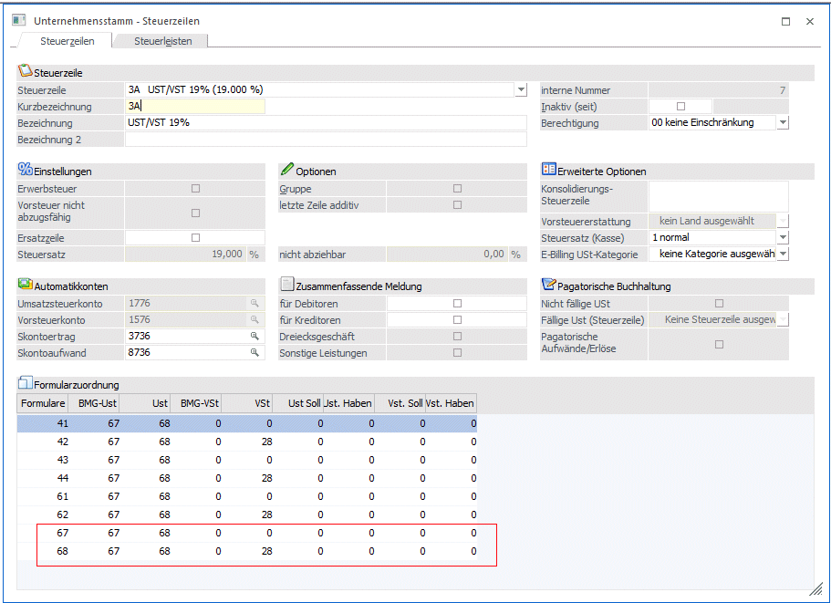
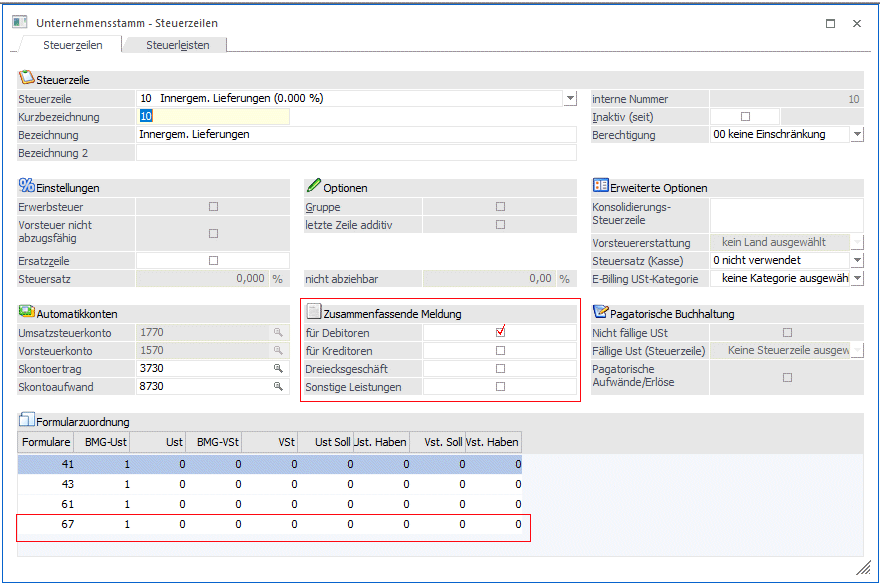
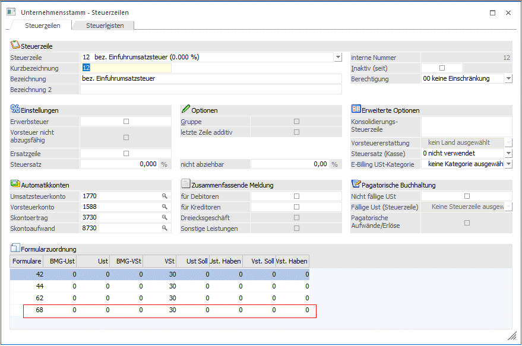

Anhand des deutschen UVA-Formulars (das sind ab 2021 die Formulare 67 und 68 für den Ausdruck - siehe Kapitel "USt-Voranmeldung") wird nun dargestellt, wie sich die Formulare zusammensetzen und was bei den einzelnen Steuerzeilen eingegeben werden muss, damit das Formular korrekt ausgedruckt werden kann.
Das Formular gliedert sich in Positionen und in Summen, wobei die Summen immer aus den verschiedenen Positionen berechnet werden.
Erklärung zum Formular
Zunächst werden alle im Formular zu bedruckenden Felder mit Positionsnummern (Feldnummern) belegt. Jede Positionsnummer entspricht einer Variable, die am Formular gedruckt werden kann.
Im Folgenden finden Sie die Belegung anhand des aktuellen Umsatzsteuervoranmeldungsformulars: Für alle auszufüllenden Felder gilt eine fortlaufende Nummerierung, wobei in Zeile 20 die Position (Feldnummer) 67 und 68 gedruckt wird. Die Summe der Umsatzsteuer setzt sich zusammen aus den Positionen 68, 11, 13, 16, 70, 23, 25, 51, 73, 64 und 66. Diese Summe findet sich auch als Übertrag in Zeile 45 (2. Seite).


Beschreibung der Formelfelder
Ø Formulare:
67, 68 UVA-Formular Deutschland ab 2021 1. und 2. Seite (EUR)
Ø Formel 1 (Übertrag Seite 1 unten und Seite 2 oben):
Feld68 + Feld11 + Feld13 + Feld16 + Feld70 + Feld23 + Feld51 + Feld25 + Feld73 + Feld64 + Feld66
Ø Formel 2:
Feld68 + Feld11 + Feld13 + Feld16 + Feld70 + Feld23 + Feld51 + Feld25 + Feld73 + Feld64 + Feld66
Ø Formel 3:
(Feld68 + Feld11 + Feld13 + Feld16 + Feld70 + Feld23 + Feld51 + Feld25 + Feld73 + Feld64 + Feld66) - (Feld28 + Feld29 + Feld30 + Feld58 + Feld31 + Feld32 + Feld33)
Ø Formel 4:
(Feld68 + Feld11 + Feld13 + Feld16 + Feld70 + Feld23 + Feld51 + Feld25 + Feld73 + Feld64 + Feld66) - (Feld28 + Feld29 + Feld30 + Feld58 + Feld31 + Feld32 + Feld33 + Feld34) + Feld 27
Ø Formel 5:
(Feld68 + Feld11 + Feld13 + Feld16 + Feld70 + Feld23 + Feld51 + Feld25 + Feld73 + Feld64 + Feld66) - (Feld28 + Feld29 + Feld30 + Feld58 + Feld31 + Feld32 + Feld33 + Feld34 + Feld35) + Feld 27
Beispiele für Steuerzeilen:
Ø Steuerpflichtige Umsätze zum Steuersatz von 19%
Die Position 67 enthält den Gesamtbetrag der Bemessungsgrundlagen für 19 %ige Umsätze. D. h. in der Steuerzeile muss bei den entsprechenden Zeilen (Umsatzsteuerzeilen mit 19 %) bei der BMG UST 67 eingetragen werden.
Die Position 68 enthält den Steuerbetrag der 19 %igen Umsätze. Daher muss in den entsprechenden Steuerzeilen (Umsatzsteuerzeilen mit 19 %) im Feld USt 68 eingetragen werden. Die Steuer wird aufgrund der Bemessungsgrundlage und des in der Steuerzeile hinterlegten Prozentsatzes (19%) errechnet.
Da die Position 68 für den Übertrag benötigt wird (die Steuer wird auf Grundlage der BMG errechnet) und der Übertrag auch im Formular 68 (2. Seite) angedruckt werden muss, muss in allen Steuerzeilen (Umsatzsteuerzeilen mit 19 %) im Feld BMG-Ust die Position 67 und im Feld USt die Position 68 ebenfalls eingetragen werden.
Diese Steuerzeile kann ebenfalls für 19 %ige Vorsteuer verwendet werden. Dafür wird im Feld VST die Position 28 hinterlegt.

Ø steuerfreie Umsätze mit Vorsteuerabzug an Abnehmer mit USt-IdNr
Die Position 1 enthält z. B. den Gesamtbetrag der Bemessungsgrundlagen für steuerfreie Umsätze mit Vorsteuerabzug an Abnehmer mit USt-IdNr. Für die entsprechenden Steuerzeilen (Erlöse 0 %) heißt das, dass für das Formular 67 die Bemessungsgrundlage in die Position 1 auf dem Formular 67 gerechnet werden muss.
Da dieser Umsatz ebenfalls in der Zusammenfassenden Meldung ausgegeben werden muss, wird auch das Häkchen für die Zusammenfassende Meldung gesetzt.

Ø Einfuhrumsatzsteuer / direkte Steuerbuchungen
Die Einfuhrumsatzsteuer wird normalerweise, da es keine Bemessungsgrundlage und keinen Steuersatz gibt, manuell und direkt auf das jeweilige Konto gebucht. In diesem Fall muss dann das Feld VST Soll mit dem Formular 68 und der Feldnummer 30 gefüllt werden.
Damit aber diese Steuerzeile bei der Stapelerstellung der UVA korrekt berücksichtigt wird, muss mit dieser Steuerzeile gebucht werden. Dazu wird ein Dummykonto angelegt, in dem diese Steuerzeile hinterlegt wird. Beim Buchen dieses Dummykontos wird die Steuerzeile vorgeschlagen und der Betrag der Einfuhrumsatzsteuer wird als Steuerbetrag und als Buchungsbetrag eingegeben. Da der Buchungsbetrag mit dem Steuerbetrag identisch ist, erhält das Dummykonto keinen Buchungsbetrag.
Die Zuordnung zur UVA erfolgt in der Steuerzeile über das Feld VSt.
